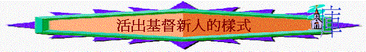

E.活出基督---活出基督新人的樣式(3:5-17)
引言:
〜當信徒真與基督復活，凡事持定元首，他的生命自然活出基督，行事為人也會自然討主喜悅，對得起元首基督，你又認為新的生命有甚麼特色與表現？
一.老我生命—要治死(3:5-9)
1.
3:5題及「地上的肢體」是什麼意思？
2.
3:5-9
用什麼徹底對付的字眼對付「地上的肢體」?
3.
要對付什麼事情？ 為何要對付？
4.
你最想對付的是什麼事？ 為什麼？
二.
新的生命—要流露(3:9-17)
1.
我們脫去了舊人後，應穿上什麼？
這新人有什麼特色？(3:9-11)
何謂「知識上漸漸更新」？
2.
何謂「希利尼人」？「西古提人」？在基督裏新造的人和他們有什麼分別？
3.
3:13又題及我們有什麼身份？這些身份和我們生活的表現有什麼關係？
4.
3:12「存」又可譯為什麼？我們有以上身份，又應存什麼心？試解釋每一個心？
5.
愛心和以上的心/美德有什麼關係？
以上的心你最想追求那個？
6.
另外何謂「又要叫基督的平安在你們心裡作主」？
7.
用各樣的智慧把主的道(不是異端的道)存在心裏，可用甚麼方法？試解釋每一個方法的意思？
8.
3:17又題到新人要怎樣？何謂或為何「都要奉主耶穌的名」？為何要「奉主耶穌的名」？
9.
有沒有見過一些基督徒的生命表現有美好新人樣式？試分享？